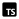
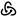

About Me
Hello and thank you for taking the time to look over my portfolio! My name is secondl1ght, well that's not my real name, I am a private person and prefer to go by a pseudonym online. :) I am currently in a career in a totally different field (forestry) and I am hoping to become a front-end web developer. About a year ago I discovered bitcoin and it completely changed my life in so many ways. I now want to contribute to open-source projects as well as work for a bitcoin company full-time. I hope you like what you find on this website and I believe that with the support of experienced developers, I have what it takes to become a great front-end dev.
Projects
Here are my future projects that I plan to complete.
Future Block Date
This idea for this website is to create a simple one page site that you can enter a future bitcoin block height and it will return the estimated date for you. I came up with this idea when wondering to myself what the date will be when the 1,000,000th block gets mined.
Bitcoin Recommendations
This website will be a curated list of bitcoin hardware, software and resources that I have found useful and want to share with other people. I know there are many sites already like this but I still think some people may find it helpful.
Skills
- HTML5
- CSS3
- JavaScript
- Markdown
- Git
- Linux
Future Skills
- React
- Bootstrap
- node.js
-  TypeScript
-  Redux
Learning
I am currently taking the Front-End Engineer career path on Codecademy and I am 40% complete! I will display my certificates on this page as I complete them.
Learn Responsive Design CertificateContact
If you would like to contact me please send me a message on Discord @secondl1ght#9164 or by e-mail at secondl1ght@protonmail.com, I would love to hear from you!